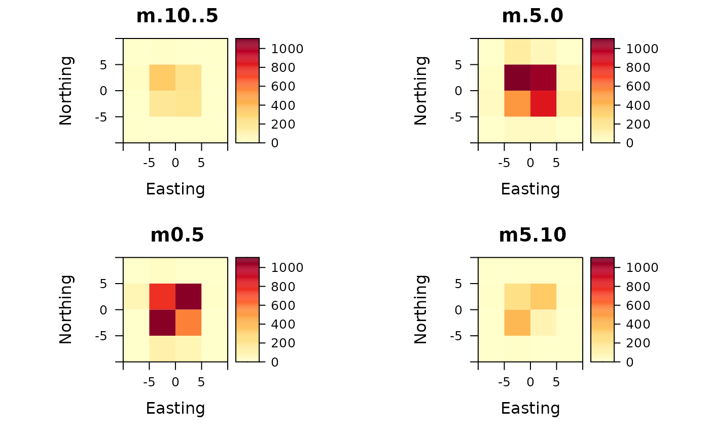
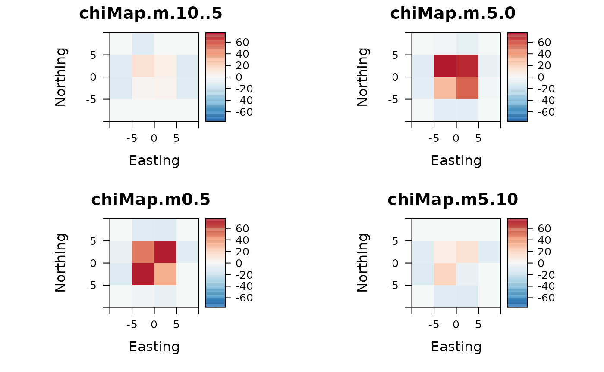

First some example trajectories are created in form of Correlated Random Walks (CRWs):
crws <- lapply(X=seq(1:100), FUN = function(X) {
sim.crw.3d(nStep = 100, rTurn = 0.99, rLift = 0.99, meanStep = 0.1)
})
plot2d(crws)Count points per voxel and plot counts as raster stack:
points <- do.call("rbind", crws)
extent <- extent(c(-10, 10, -10, 10))
ud <- voxelCount(points, extent, xyRes=5, zMin=-10, zMax=10)
plotRaster(ud)
By calculating Chi maps, the over- and underrepresentation of points in the voxel space can be interpreted statistically:
chi <- chiMaps(ud)
plotRaster(chi, centerColorBar=TRUE)
The voxel dataCube of type rasterStack can be exported as Tiff image sequence. Image sequences are a common structure to represent voxel data and most of the specific software to visualize voxel data is able to read it (e.g. blender)
saveImageSlices(ud, filename = "utilization-distribution", dir="folder/path")
saveImageSlices(chi, filename = "chi-map-cube", dir="folder/path")